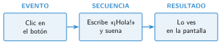

Eventos y secuencias
🤔 Pienso5 min
Qué hago aquí: Piensa un momento y contesta con lo que ya sabes. No pasa nada si no lo sabes: es para empezar.
Cuando tocas el icono de la cámara, se abre la cámara. Escribe otras dos cosas que hace el móvil cuando lo tocas.
📖 Leo y aprendo15 min
Qué hago aquí: Lee despacio, mira los dibujos y los ejemplos, y quédate con la idea clave del final.
Una secuencia son instrucciones que se hacen una detrás de otra, de arriba abajo.
Una aplicación espera a que pase algo. Por ejemplo, que pulses un botón . Eso que pasa es un evento.

En App Lab el bloque de eventos es onEvent. Le dices tres cosas: qué elemento (su id), qué evento (por ejemplo, click) y qué hacer.
✏️ Hago25 min
Qué hago aquí: Haz las actividades en orden. Empieza siempre por las básicas.
Escribe dos eventos que puede detectar una aplicación.
¿Qué tres cosas se le dicen al bloque onEvent?
Programa en App Lab el botón que saluda. Pruébalo.
Añade dos botones: uno pone el fondo rojo y otro, azul. Dibuja aquí los dos bloques.
Crea dos pantallas. Un botón lleva a la segunda (bloque setScreen) y otro vuelve a la primera. Explica cómo lo has hecho.
✏️ Puedes responder escribiendo, con un dibujo o un esquema, o contándolo en voz alta.
🚀 Amplío (si quieres saber más)
Qué hago aquí: ¿Has terminado? Lee la curiosidad o elige el reto. Es voluntario.
Usa el evento keydown. Haz que la pantalla cambie de color al pulsar R, V o A.
✅ Compruebo5 min
Qué hago aquí: Contesta sin mirar la ficha y marca cómo lo llevas.